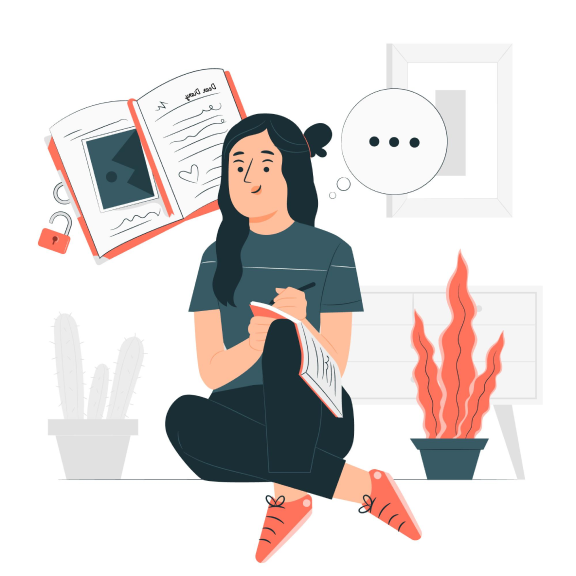

Your personal journaling app
LISTEN TO YOUR MIND BY WRITING
 Calender Tracker
Calender TrackerEmotion graphs
 Contents are encrypted
Contents are encrypted

Your personal journaling app
Calender Tracker Contents are encryptedClutter free text pad to carve your thoughts. Designed to securely auto save your data.
Calendar widget to navigate between time. Reflect your consistency.
With the help of AI, journals are analyzed to understand the emotion behind the words
Journals are encrypted from user’s browser to data store using military algorithms
Journaling is an exercise that has been around for well over thousands of years.
Journaling follows a simple process of writing your thoughts without any rules or restrictions. The
act of self-reflection and routinely putting one’s experiences, feelings, beliefs, and emotions on
paper can do more good than just help you feel better.
Especially when it comes to self-improvement and leading a mindful life, journaling can be a great
tool.

Mindful journaling is asking yourself why you feel a certain way and then letting it go out of your
head and onto the paper. You question yourself about yourself and get to know your values, your
motives, the way you think, and how you feel.
You take into consideration more possible
outcomes, study your situation, and thus shift your mindset. With the clarity of your thoughts, You
stop going in the past, don't look into the future, and become truly present and mindful of your
life.
Journaling allows you to openly express your emotions that you usually keep bottled up. You get an
opportunity to have full emotional disclosure and vent without ever being judged. This helps you
feel lighter. Seeing your thoughts written in front of you in their true form without any edits
helps you see the authenticity of your thinking.
In doing so, you identify your triggers and learn to better handle them. When you write down and
figure out the thoughts that are upsetting, you feel happier, calmer, less anxious, and experience
overall better mental health.
Journaling is your private space for decision making without any judgment or pressure. This
facilitates new perspectives and idea generation. You write different possible scenarios, examine
the positive and negative implications, and make better choices.
You build self-awareness and discover things in your mind that might be affecting your
behavior and moods. You make your decisions and explanations more realistic and improvise better
ways to achieve your goals. You may find out that the thing you are stressing about might not be
that big of a deal and this helps you approach it in a more bold manner.

Has been keeping journals since she was 13 years old. She considers them to be her therapy sessions. They're all simple leather diaries, locked away in a safe in her home. Every boyfriend, every relationship, her friendships, her work, her family — all of them are dissected on pages. Jen is not the type to get into huge, verbal altercations with her boyfriends; her way of dealing with relationship issues has always been to write in her diary, then have a discussion. That way she always has the upper hand in fights, and never loses control.